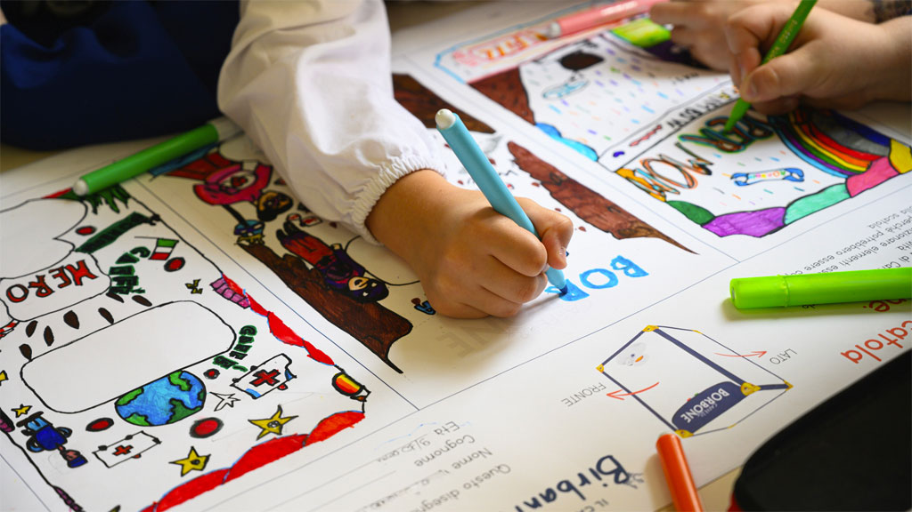

Diamo valore a tutti
È grazie alla parola “MWANYI”, che in lingua ugandese significa proprio “caffè”, che nasce questo progetto, partito nel 2022, rivolto ai giovani e alle donne ugandesi, che mira a sviluppare le competenze agricole e a creare percorsi di inclusione finanziaria, con l'obiettivo di migliorare la qualità del raccolto, stimolare lo sviluppo dei piccoli produttori locali, favorire l'imprenditoria giovanile e scoraggiare l'abbandono rurale.

Sempre nel 2022, abbiamo avviato il progetto “Caffè del Birbantello”, ossia un'iniziativa nata a Napoli ed estesa
in seguito a tutto il territorio nazionale, che, grazie anche al supporto di Onlus locali, mira a contrastare l'esclusione,
la marginalizzazione e la fragilità sociale dei giovani.
I bambini ed i ragazzi coinvolti nel progetto hanno il compito di realizzare un disegno che celebri
i loro “Eroi di tutti i giorni”.
